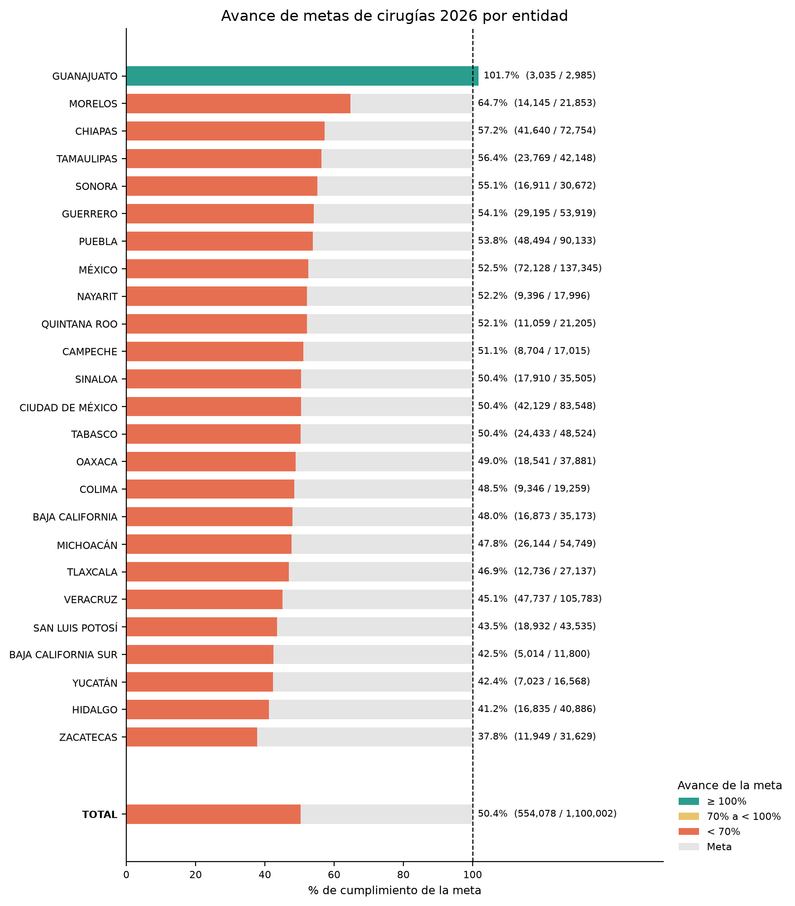
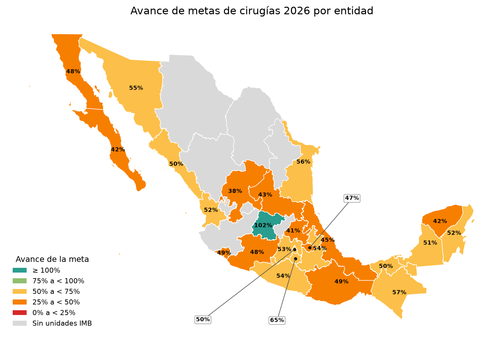
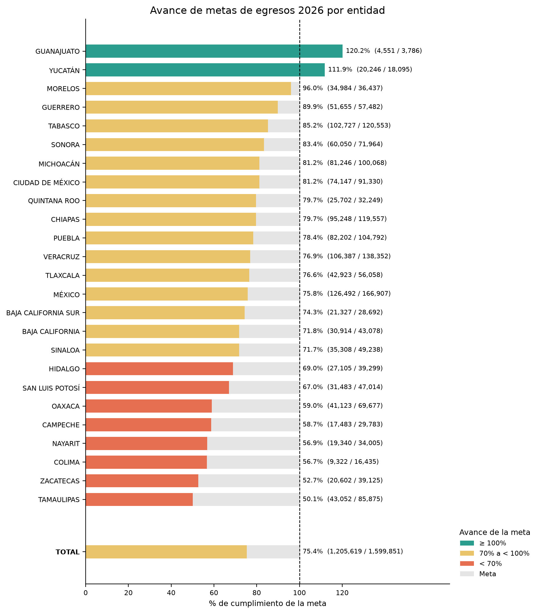
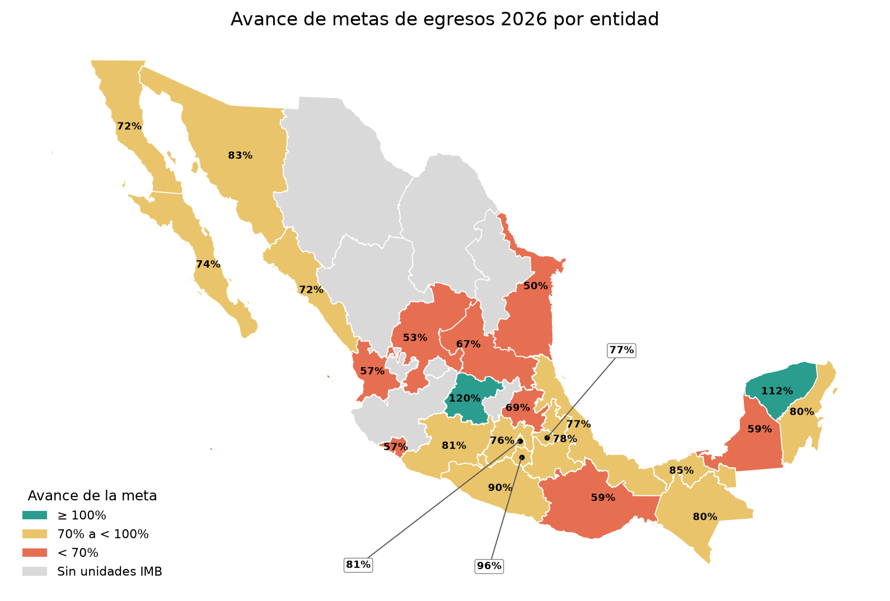

Datos de unidades de salud del IMSS Bienestar
Metas de cirugías y egresos hospitalarios del 2026
5 de octubre de 2026
Luis
M. González

La propuesta de metas por CLUES fue realizada por la Unidad de Planeación Estratégica y Coordinaciones Estatales, (UPECE). Los datos para el cálculo de los avances se obtienen del Catálogo de CLUES, (Secretaría de Salud - DGIS, 23 de septiembre de 2026) y Egresos Hospitalarios, (Secretaría de Salud - DGIS, 05 de octubre de 2026).
La fecha de corte es el 2026-09-30
Metas de cirugías
| entidad | meta_cirugias | cirugias | avance |
|---|---|---|---|
| BAJA CALIFORNIA | 35,173 | 16,873 | 47.97 |
| BAJA CALIFORNIA SUR | 11,800 | 5,014 | 42.49 |
| CAMPECHE | 17,015 | 8,704 | 51.15 |
| CHIAPAS | 72,754 | 41,640 | 57.23 |
| CIUDAD DE MÉXICO | 83,548 | 42,129 | 50.42 |
| COLIMA | 19,259 | 9,346 | 48.53 |
| GUANAJUATO | 2,985 | 3,035 | 101.68 |
| GUERRERO | 53,919 | 29,195 | 54.15 |
| HIDALGO | 40,886 | 16,835 | 41.18 |
| MÉXICO | 137,345 | 72,128 | 52.52 |
| MICHOACÁN | 54,749 | 26,144 | 47.75 |
| MORELOS | 21,853 | 14,145 | 64.73 |
| NAYARIT | 17,996 | 9,396 | 52.21 |
| OAXACA | 37,881 | 18,541 | 48.95 |
| PUEBLA | 90,133 | 48,494 | 53.80 |
| QUINTANA ROO | 21,205 | 11,059 | 52.15 |
| SAN LUIS POTOSÍ | 43,535 | 18,932 | 43.49 |
| SINALOA | 35,505 | 17,910 | 50.44 |
| SONORA | 30,672 | 16,911 | 55.13 |
| TABASCO | 48,524 | 24,433 | 50.35 |
| TAMAULIPAS | 42,148 | 23,769 | 56.39 |
| TLAXCALA | 27,137 | 12,736 | 46.93 |
| VERACRUZ | 105,783 | 47,737 | 45.13 |
| YUCATÁN | 16,568 | 7,023 | 42.39 |
| ZACATECAS | 31,629 | 11,949 | 37.78 |
| TOTAL | 1,100,002 | 554,078 | 50.37 |
Gráfica de barras de avances estatales

Mapa con avances estatales

Metas de egresos
| entidad | meta_egresos | egresos | avance |
|---|---|---|---|
| BAJA CALIFORNIA | 43,078 | 30,914 | 71.76 |
| BAJA CALIFORNIA SUR | 28,692 | 21,327 | 74.33 |
| CAMPECHE | 29,783 | 17,483 | 58.70 |
| CHIAPAS | 119,557 | 95,248 | 79.67 |
| CIUDAD DE MÉXICO | 91,330 | 74,147 | 81.19 |
| COLIMA | 16,435 | 9,322 | 56.72 |
| GUANAJUATO | 3,786 | 4,551 | 120.21 |
| GUERRERO | 57,482 | 51,655 | 89.86 |
| HIDALGO | 39,299 | 27,105 | 68.97 |
| MÉXICO | 166,907 | 126,492 | 75.79 |
| MICHOACÁN | 100,068 | 81,246 | 81.19 |
| MORELOS | 36,437 | 34,984 | 96.01 |
| NAYARIT | 34,005 | 19,340 | 56.87 |
| OAXACA | 69,677 | 41,123 | 59.02 |
| PUEBLA | 104,792 | 82,202 | 78.44 |
| QUINTANA ROO | 32,249 | 25,702 | 79.70 |
| SAN LUIS POTOSÍ | 47,014 | 31,483 | 66.97 |
| SINALOA | 49,238 | 35,308 | 71.71 |
| SONORA | 71,964 | 60,050 | 83.44 |
| TABASCO | 120,553 | 102,727 | 85.21 |
| TAMAULIPAS | 85,875 | 43,052 | 50.13 |
| TLAXCALA | 56,058 | 42,923 | 76.57 |
| VERACRUZ | 138,352 | 106,387 | 76.90 |
| YUCATÁN | 18,095 | 20,246 | 111.89 |
| ZACATECAS | 39,125 | 20,602 | 52.66 |
| TOTAL | 1,599,851 | 1,205,619 | 75.36 |
Gráfica de barras de avances estatales

Mapa con avances estatales

Descargas
Descargar Archivo
PDF
Referencias
Secretaría de Salud - DGIS. (05 de octubre de 2026).
Datos abiertos - Egresos
hospitalarios. Web. http://www.dgis.salud.gob.mx/contenidos/basesdedatos/da_egresoshosp_gobmx.html
Secretaría de Salud - DGIS. (23 de septiembre de 2026).
Catálogo CLUES. Web. http://www.dgis.salud.gob.mx/contenidos/intercambio/clues_gobmx.html